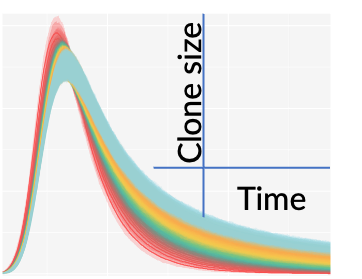
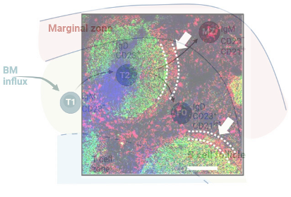
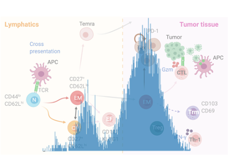
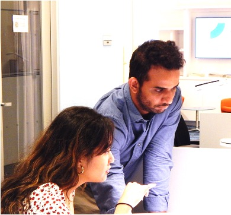
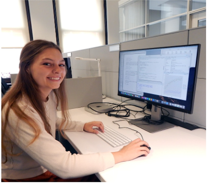

Funding News
Developing quantitative understanding of marginal zone B cell ontogeny, maintenance, and response to antigenic challenges across the lifespan. Learn more
Jobs and opportunities
We are hiring! We are seeking a highly motivated postdoctoral research scientist to spearhead a multidisciplinary project studying the dynamics of the immune system in health and disease. The Postdoctoral Research Scientist will develop mathematical, computational, and statistical models and will work in collaboration with leading experimental immunologists and computational biologists.
Graduate Research Asistant positions are also available (Masters and PhD students).
Send your CV, letter of interest, and any inquiries here.
Research Themes
-

Space-time logistics of immune repertoire diversity
The numbers of T and B lymphocytes are dynamically regulated by the processes of death, division and differentiation across our lifespan. As a result, the breadth and the size of lymphocyte populations continuously evolve as we age. Our aim is to quantify the processes that govern the ecological distributions of lymphocytes and in doing so, identify the mechanisms that establish and maintain our immune repertoires.
-

Fate choices and response dynamics of B cells
Immune activation induces seismic changes in the lymphatic environment and exposes lymphocytes to a wide variety of interactions and stimuli, which dramatically alter their dynamics. We aim to understand how and to what degree the crosstalk between antigenic signals and environmental cues affect the fate decisions of responding B cells and their clonal trajectories.
-

Conventional and regulatory T cells in antitumor immunity
The dynamics of diverse T cell subsets within non lymphoid tissues are unclear and therefore the intensity and longevity of the tumor-specific T cell response in several cancers remain largely unknown. Our goal is to combine experimental data with mathematical modeling to track the subset composition of intratumoral T cells in order to pinpoint the mechanisms that govern tumor tolernace or rejection.
Selected Publications
-
Towards a unified model of naive T cell dynamics across the lifespan
S Rane, T Hogan, E Lee, B Seddon, AJ Yates eLife 2022
-
Cell generation dynamics underlying naive T cell homeostasis in adult humans
Jeff E Mold, Pedro Réu, Axel Olin, Samuel Bernard, Jakob Michaëlsson, Sanket Rane, Andrew Yates, Azadeh Khosravi, Mehran Salehpour, Göran Possnert, Petter Brodin, Jonas Frisén PLoS biology 2021
-
Fate mapping quantifies the dynamics of B cell development and activation throughout life
M Verheijen, S Rane, C Pearson, AJ Yates, B Seddon Cell reports 2020
-
Spatiotemporal modeling of the key migratory events during the initiation of adaptive immunity
Alan J Hayes, Sanket Rane, Hannah E Scales, Gavin R Meehan, Robert A Benson, Asher Maroof, Juliane Schroeder, Michio Tomura, Neil Gozzard, Andrew J Yates, Paul Garside, James M Brewer Frontiers in Immunology 2019
People and Connections
We work closely with experimental immunology labs at the Technical University Munich (Schmidt-Supprian and Zimber-Strobl groups) and the University College London (Seddon lab). We collborate locally too! We have ties with experimental and computational biology groups at MSK and Columbia and Yale Universities.
Interested in collaborating?
The idea behind data-driven-modeling approach is to integrate observations from diverse experimental approaches with adaptable mathematical models that can provide a robust quantitative analysis of diverse biological phenomena. If you are interested in such analysis and developing a mechanistic understanding of the underlying biology in your experimental systems then shoot us an Email.
Current Members
 Dr. Sanket Rane (PI) is a theoretical immunologist trained in deterministic and probabilistic mathematical modeling, inference-driven Bayesian statistical methods, and cell biology techniques. Sanket earned his PhD in immunology at the National Institute of Immunology, India, for investigating molecular and cellular factors that govern T cell numbers and function during healthy aging. He transitioned into using computational approaches to study lymphocyte ecology during his postdoctoral years at the University of Glasgow and Columbia University.
Dr. Apoorva Singh is a Postdoctoral Research Scientist. She completed her PhD in Mathematics studying operator theory and functional analysis. She is interested in developing mathematical models to understand the dynamics of immune cells in health and disease. Her current research interests lie at the interface of applied mathematics, statistics, and immunology, with a focus on developing and refining computational tools to investigate immune system dynamics and better understand human immune responses.
 Jun Won. Jun works on building algorithms to
optimize stochastic simulation frameworks.
He also writes statistical and programming routines to connect probabilistic models to Markov chain
Monte Carlo (MCMC) methods for Bayesian inference. In Rane lab so far, Jun has investigated early B
cell development in the bone marrow,
employing Bayesian statistical modeling to gain insights into their cellular dynamics.
Jun Won. Jun works on building algorithms to
optimize stochastic simulation frameworks.
He also writes statistical and programming routines to connect probabilistic models to Markov chain
Monte Carlo (MCMC) methods for Bayesian inference. In Rane lab so far, Jun has investigated early B
cell development in the bone marrow,
employing Bayesian statistical modeling to gain insights into their cellular dynamics.
Puqi Song, Columbia University (Statistics). Puqi uses Python and R to visually analyze the biological data of T cells and studies the characteristics of TCRS at different ages over different time. She tries to establish mathematical models and visual descriptions that could describe T cell behaviors (such as proliferation, death, and differentiation).
Past Members
 Allison Pascual, Stony Brook University (Biology), IICD Summer Research Program
2022.
Allison developed a mathematical modeling framework to identify cellular processes that regulate the
age-associated accumulation of Fas (apoptotic marker) expresssing T cells.
Fas expression in T cells increases during healthy ageing but this increases is even more extreme in
patients suffering from Head and Neck cancer.
Allison built mechanistic models to delineate the effects of age on the rate of conversion of Fas
negative to positive T cells and/or on their net loss rates, in an effort to understand their
preferrential enrichment with age.
Allison Pascual, Stony Brook University (Biology), IICD Summer Research Program
2022.
Allison developed a mathematical modeling framework to identify cellular processes that regulate the
age-associated accumulation of Fas (apoptotic marker) expresssing T cells.
Fas expression in T cells increases during healthy ageing but this increases is even more extreme in
patients suffering from Head and Neck cancer.
Allison built mechanistic models to delineate the effects of age on the rate of conversion of Fas
negative to positive T cells and/or on their net loss rates, in an effort to understand their
preferrential enrichment with age.
 Julia Rehring, University of Michigan, Ann Arbor (Mathematical Biology, minor in Computer Science), IICD Summer Research Program 2023. Julia is investigating plasticity in B cell differentiation trajectories during immune responses by combining mathematical modeling with data derived from a novel antigen-inducible reporter mouse model. She employs bayesian statistical approach to validate models exploring time and/or density dependent variation in B cell generation or their loss.